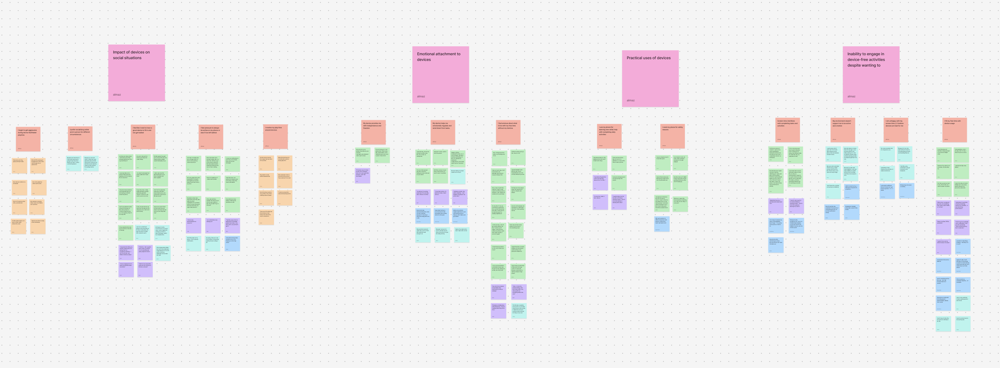
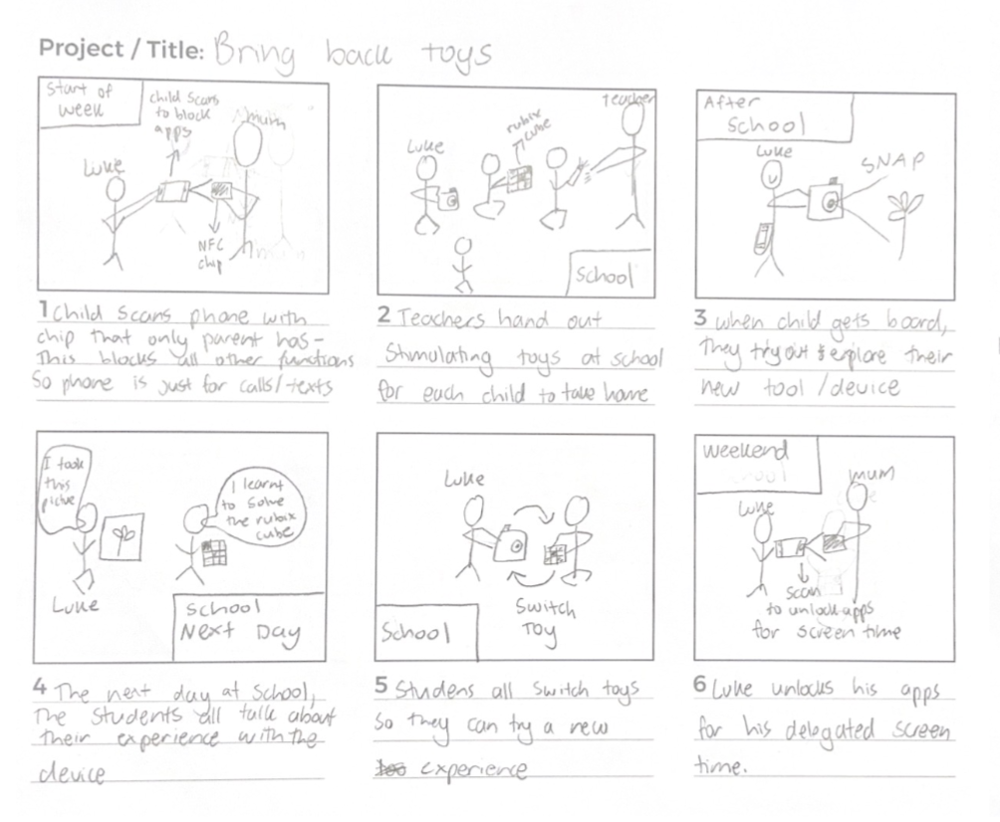
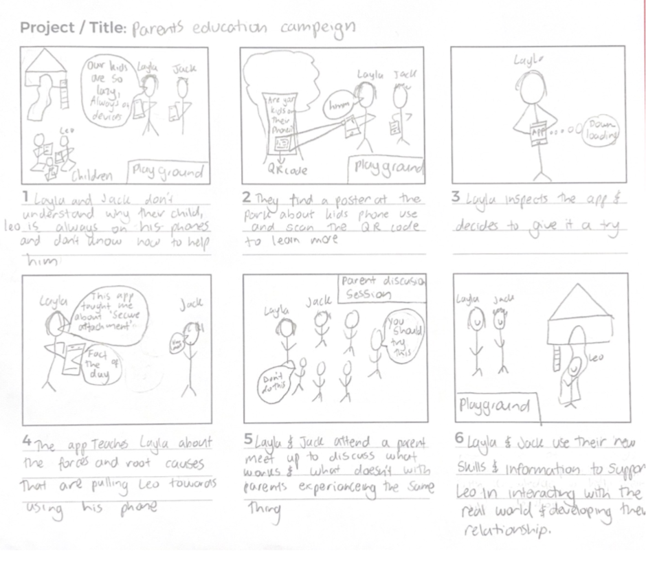
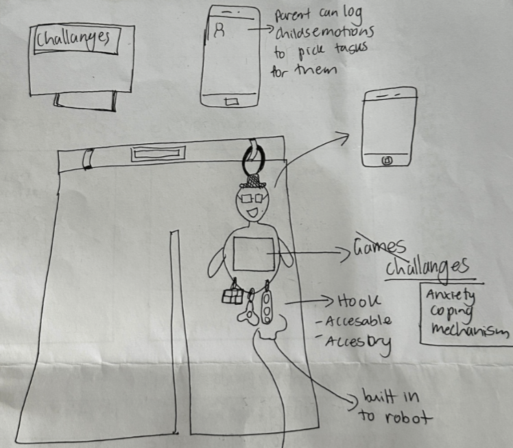
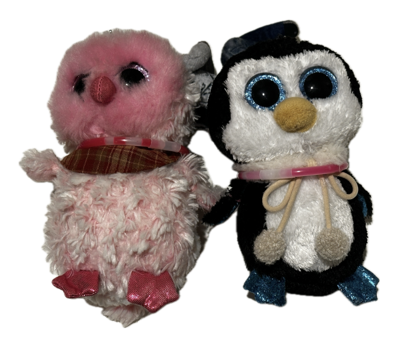
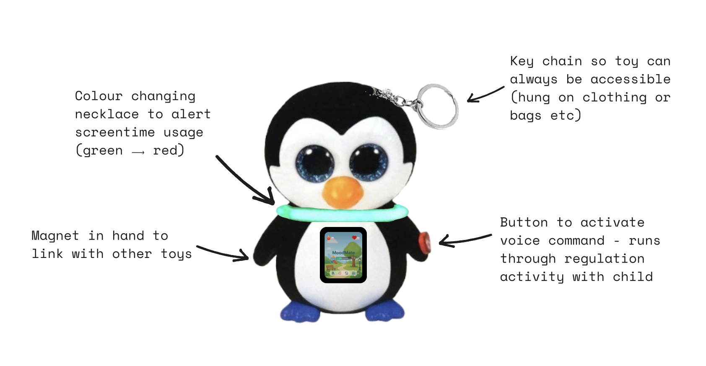
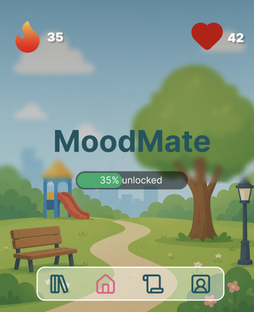
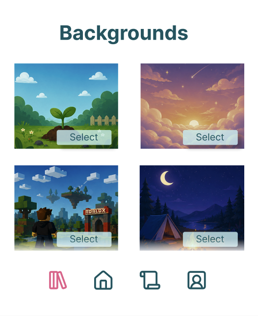
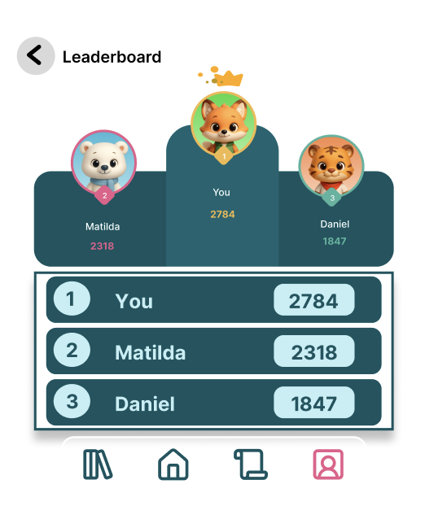
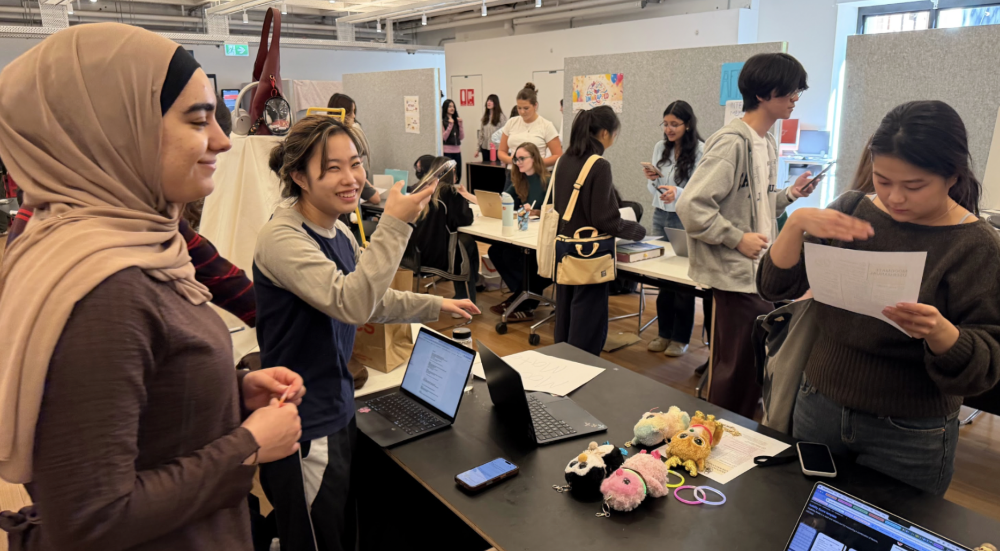

The Open Brief
My team and I were given an open brief. Care. The ambiguity meant endless possibilities but also meant we had to pave our own path. After endless discussions and research (involving an online ethnography, secondary research, interviews and focus groups where I led the interviews) we began to uncover a problem that we all felt passionate about solving.

The Missing Childhood
We originally wanted to focus on the idea of nostalgia and reviving our inner child but shifted to focusing on helping the children of today's generation obtain a beneficial childhood like we had growing up. This shift was driven by the direction our research was swaying us. We ended with the following 'How Might We' statement:
'How might we provide children with crucial social and emotional developmental skills by targeting forces that contribute to phone addiction in children'
Endless Ideas
We began ideating through storyboarding and a decision matrix, landing on one idea: community-run social events at local venues like libraries and parks, where children could connect through art, play and sport. However, our tutor pointed out a flaw. Children would still depend on their parents to attend, meaning the solution did not truly empower them to emotionally regulate on their own.


The Daily Device
This pushed us to redefine our goal: empowering children to emotionally regulate anytime, anywhere. The solution needed to be accessible on an average Tuesday afternoon, before bedtime, during school and in the early mornings. We returned to ideating with crazy 8s, which led us to MoodMate, a solution that brought together the strongest features each team member had found separately into one cohesive product.


MoodMate
Moodmates main goal was to be a tool. The button on the toy's hand would walk the child through an emotional regulation task such as the 5-4-3-2-1 grounding technique in order to calm them down. Moodmate is more than just a tool as it can be used as a fashion accessory by adding it to clothing and bags. We further emphasised this point of social connection as the toys can hold hands which links the friend to their digital network. We knew kids needed incentives so we included a digital screen on the toys belly which unlocked more and more of a background as they completed tasks. Additionally, it included a leaderboard which they competed with friends based on how many friends they connected with that week.




Further Features
MoodMate included a colour changing feature that reflected the screen time of the user. The goal was to use social pressure to motivate children away from their phones as opposed to towards them. The toy would go red when sad (with high screen time usage) and green when happy (with low screen time usage). However during our user testing we recognised a new opportunity.

The Opportunity
When the toy turned red during a wizard of oz test, the users would often get distracted from their phones as they tried to calm it down through patting and hugging. We recognised the significance this could play in helping children emotionally regulate and decided to add it as a requirement for the user to calm down the toy. The idea was to break the cycle — a sad emotion leads to phone use, the toy reacts, the child gets off their phone to soothe the toy, and in doing so soothes themselves through connection without the shame of needing to calm down.
Key Learnings
This project taught me the importance of recognising opportunities that appear. I learnt the significance of being open minded and not fixating on ideas when there is such a broad scope of possibilities.